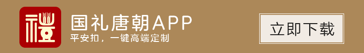

<!--
  Generated template for the ArticleDetailsPage page.

  See http://ionicframework.com/docs/components/#navigation for more info on
  Ionic pages and navigation.
-->
<ion-header>

  <ion-navbar>
    <ion-title>articleDetails</ion-title>
  </ion-navbar>

</ion-header>


<ion-content>
  <div class="img-box"></div>
  <ion-title class="ui-title">{{detailData.title}}</ion-title>
  <div class="title-note">
    <span class="left">{{detailData.label}}</span><span class="right">{{detailData.time}}</span>
  </div>
  <div class="detail-con">
    <p>
      {{detailData.detail}}</p>

  </div>
  <ul class="recommendList" *ngIf="proList.length>0">
    <li *ngFor="let items of  proList" (click)="goDetail(items.id)">
      
      <h2>{{items.title}}</h2>
      <div class="recommend-info"><span class="price">￥{{items.price}}</span>
        <span class="go-detail">查看详情</span>
      </div>
    </li>

  </ul>
  <div class="down">
    </div>
</ion-content>
